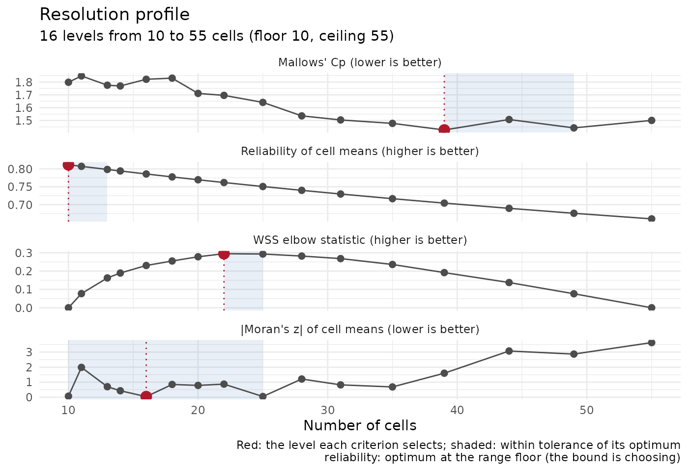

Choosing a resolution
Justin Chase
18 September 2026
Source:vignettes/resolution.Rmd
resolution.RmdThe question
Before point observations can be aggregated into regions, something has to decide how many regions. Twenty cells over a county smooth away most of the variation you came to measure. Two thousand give you cells holding one observation each, where the standard errors are undefined and every cell mean is one number pretending to be an average.
Administrative boundaries settle this by fiat: you get the census tracts that exist. Drawing the regions yourself removes the fiat and leaves the decision with you, and the number propagates into the variance of the cell means, the design effect, and the size of the blocks a spatial cross-validation holds out.
Three functions answer the question, in increasing order of how much they tell you.
A fixture with known structure
A simulated exponential field, so the structure is known before
anything is fitted. The covariance parameter a = 100 gives
an effective range of 300 units across a 1000-unit square, and
sd = 1 adds a nugget large enough to matter later.
The short answer
determine_optimal_levels() returns a few candidate cell
counts, best first.
lv <- determine_optimal_levels(pts, max_levels = 40)
lv## [1] 7 6 8lv[1] is what get_voronoi_seeds() takes as
n, and what build_tessellation() takes as
approx_n_cells for its "hex" and
"square" methods. Voronoi has no cell count to set: it
grows one cell per point you hand it, which is why the count is set when
you place the seeds rather than when you tessellate them. The last
section shows the two calls in order.
Two things to know about this function before you rely on it. Its
criterion = "morans_i" and
criterion = "combined" settings need both
response_var and predictor_vars; give it only
a response and it logs a warning and falls back to
"geometric". And its ladder runs from 2 to
max_levels with no lower bound from the spatial correlation
of the data, so it can prefer cells wider than the field’s own
correlation range. The profile below does impose that bound, which is
why the two can disagree.
The profile
resolution_profile() fits every level on a ladder and
reports what each one costs, so you can see the shape of the trade-off
before picking a point on it. Levels are spaced logarithmically, because
cell diameter falls as
.
prof <- resolution_profile(pts, response_var = "z", n_levels = 16)
prof## Resolution profile: 16 levels on 500 points
## ladder : 10 to 55 cells (floor 10 from range 314, ceiling 55 at min_cell_n = 9)
## variogram : nugget 0.877, partial sill 1.29, range 314
## scored on : response; 25 k-means++ restarts per level; WSS rises at 0 step(s)
##
## levels wss wss_spread elbow cell_n_min cell_n_median cell_diam_median rss
## 10 7850000 0.1450 0.0000 39 48.5 250.0 882
## 11 6970000 0.0903 0.0771 33 45.0 233.0 905
## 13 5850000 0.0849 0.1630 27 40.0 214.0 865
## 14 5440000 0.0654 0.1890 20 35.5 207.0 860
## 16 4750000 0.1110 0.2300 22 32.0 194.0 883
## 18 4220000 0.0968 0.2550 18 28.0 179.0 884
## 20 3700000 0.1080 0.2780 17 26.0 170.0 821
## 22 3240000 0.1240 0.2950 16 23.0 157.0 809
## 25 2810000 0.1560 0.2930 13 21.0 144.0 777
## 28 2460000 0.1540 0.2820 12 17.5 137.0 719
## 31 2140000 0.1530 0.2680 9 16.0 128.0 698
## 35 1850000 0.1450 0.2360 9 14.0 124.0 677
## 39 1680000 0.1030 0.1920 6 13.0 112.0 645
## 44 1440000 0.0787 0.1380 7 11.0 105.0 677
## 49 1280000 0.1090 0.0763 5 9.0 94.4 635
## 55 1110000 0.1090 0.0000 5 9.0 89.2 654
## cp moran_i moran_z reliability
## 1.80 -0.11400 -0.0713 0.811
## 1.85 0.00559 1.9800 0.807
## 1.78 -0.03700 0.7000 0.798
## 1.77 -0.04750 0.4320 0.794
## 1.82 -0.06380 0.0399 0.786
## 1.83 0.00463 0.8500 0.778
## 1.71 0.00555 0.7870 0.770
## 1.70 0.01740 0.8720 0.762
## 1.64 -0.03800 0.0485 0.751
## 1.54 0.04970 1.2100 0.740
## 1.50 0.02490 0.8220 0.730
## 1.48 0.01770 0.6850 0.717
## 1.43 0.08040 1.6000 0.704
## 1.51 0.17200 3.0700 0.690
## 1.44 0.15600 2.8700 0.676
## 1.50 0.19600 3.6300 0.660One row per level. cell_n_median and
cell_diam_median are usually the first two columns worth
reading: how many points a typical cell holds, and how wide it is in CRS
units. The width is the number you can compare against something you
already know about your own data, such as the spacing of a sampling grid
or the size of a field.
The four criteria
| criterion | measures | needs | direction |
|---|---|---|---|
elbow |
how far the within-cluster sum of squares curve bends below its own chord | coordinates only | larger |
cp |
Mallows’ of the piecewise-constant approximation of the response by cell means | a response, and a variogram for the nugget | smaller |
moran_z |
spatial structure surviving in the residuals of the cell means | a response | nearer zero |
reliability |
the share of the spread in the cell means that is signal, not sampling noise | a variogram | larger |
elbow sees the coordinates and knows nothing about what
you measured. cp and reliability split the
practical question in half: how well the cells represent the field, and
whether the cell values can be told apart from noise.
moran_z is the diagnostic, and a large deviate says the
cells are still leaving spatial pattern on the table.
plot(prof)
Two behaviours are worth knowing before reading the numbers.
cp needs a nugget to have an interior
optimum. On a smooth field the piecewise-constant approximation
keeps improving as cells shrink, the penalty is too small to stop it,
and the minimum lands wherever min_cell_n stops the ladder.
The support floor is then doing the choosing, and
select_resolution() flags it. This fixture has a fitted
nugget of 0.88 against a partial sill of 1.29, which is why
cp turns around inside the ladder here.
reliability rises as cells get larger,
because bigger cells hold more points and average away more noise. Its
optimum can therefore sit on the coarse end of whatever the ladder
allows, which makes the answer a bound on the analysis. The next section
is about spotting that.
Choosing, and the flat region
select_resolution() picks the level a criterion prefers
and reports the band around it.
sel <- select_resolution(prof, criterion = "reliability")
sel## Resolution by reliability: 10 cells
## flat region : 10 to 13 (3 of 16 levels)
## note : the optimum is the first level of the ladder; the floor
## is choosing, not the criterion.sel$best is the optimum and sel$flat is
every level within tol of it. Quote the band when you write
the analysis up. tol is relative to the optimum’s value for
cp and reliability, and relative to the
criterion’s range for elbow and moran_z, whose
optima can be zero.
Two flags say when a bound chose instead of the criterion:
c(at_floor = sel$at_floor, at_ceiling = sel$at_ceiling)## at_floor at_ceiling
## TRUE FALSEat_floor is TRUE here. Reliability wanted
to keep going coarser and the correlation-range floor stopped it, so
read the answer as at most this fine and take the number as a
bound on the analysis, not as an optimum. The floor is a fact about the
data, so the fix is a different question, not a different
tol.
Criteria can prefer different levels while agreeing on a region:
sapply(c("elbow", "cp", "reliability", "moran_z"), function(cr) {
s <- select_resolution(prof, criterion = cr)
c(best = s$best, flat_lo = min(s$flat), flat_hi = max(s$flat))
})## elbow cp reliability moran_z
## best 22 39 10 16
## flat_lo 22 39 10 10
## flat_hi 25 49 13 25Where the bands overlap you have a defensible range. Where they do not, the criteria are answering different questions and you have to say which one your analysis needs.
What the ladder can support
The ladder runs between two bounds the data impose, both recorded on the profile.
## List of 7
## $ floor : int 10
## $ ceiling : int 55
## $ supported : logi TRUE
## $ area : num 976371
## $ range : num 314
## $ n : int 500
## $ min_cell_n: int 9The ceiling is floor(n / min_cell_n). Past it the
average cell holds too few points to estimate anything from. The floor
is ceiling(area / range^2), from the fitted autocorrelation
range: cells wider than the range average over more than one patch of
the field, mixing values the field itself keeps apart.
When the floor exceeds the ceiling, the data cannot support a
tessellation that respects their own correlation structure.
supported is FALSE, a warning says so, and the
ladder still runs from 2 to the ceiling so the cost of each level stays
visible. The usual causes are too few points for the extent, or a
correlation range shorter than the spacing between observations.
Choosing on one half, estimating on the other
Picking the level from the same response you then aggregate is a form
of double-dipping: the cell count was chosen to suit one realisation of
the field. select_on = "split" profiles part of the layer
and hands back the row positions of both parts.
prof_split <- resolution_profile(pts, response_var = "z", n_levels = 16,
select_on = "split")
sp <- attr(prof_split, "split")
sp## Spatial half-split (block_kfold, seed 123): 251 selection rows, 249 estimation rows
## $selection and $estimation are row positions in the layer as passed.The split is spatially blocked, not random, and records the method and seed that produced it. A random half would put neighbours of every selection point in the estimation set, and on an autocorrelated field that leaks the structure you are choosing against.
Choose from prof_split, then aggregate the rows in
sp$estimation. The cost is power: half the data gives a
noisier profile and a wider band, and the ladder itself gets shorter
because the ceiling scales with n.
## floor ceiling n supported
## 13 27 251 1On a layer of a few hundred points that shortening can leave very little ladder, which is a useful answer in itself.
Next
Hand the chosen number to whichever call decides the cell count. For
a Voronoi tessellation that is get_voronoi_seeds(), and
build_tessellation() then works on the seeds:
bnd <- clip_target_for(pts, expand = 0.02, quiet = TRUE)
seeds <- get_voronoi_seeds(boundary = bnd, method = "kmeans", n = sel$best,
sample_points = pts, set_seed = 1)
cells <- build_tessellation(seeds, boundary = bnd, method = "voronoi",
quiet = TRUE)
nrow(cells$cells)## [1] 10For a lattice the count goes to build_tessellation()
itself, and the points go in directly:
hex <- build_tessellation(pts, boundary = bnd, method = "hex",
approx_n_cells = sel$best, quiet = TRUE)
nrow(hex$cells)## [1] 18The hex count overshoots the request: the target is adjusted for
packing density and then clipped to an irregular boundary, so
approx_n_cells is approximate in both directions. The
seeded Voronoi hits the number exactly, because the seeds are the
cells.
Passing approx_n_cells with
method = "voronoi" warns and is ignored. Without the
seeding step you get one cell per observation, which is a
nearest-neighbour interpolation rather than a resolution.
vignette("spatialkit_nc_demo") runs the whole pipeline
on real boundaries. ?resolution_profile documents how each
criterion behaved on simulated fields, with the references;
?determine_optimal_levels covers the k-means++ restart
budget and the nine-cell floor below which the model-aware criteria
carry no information.